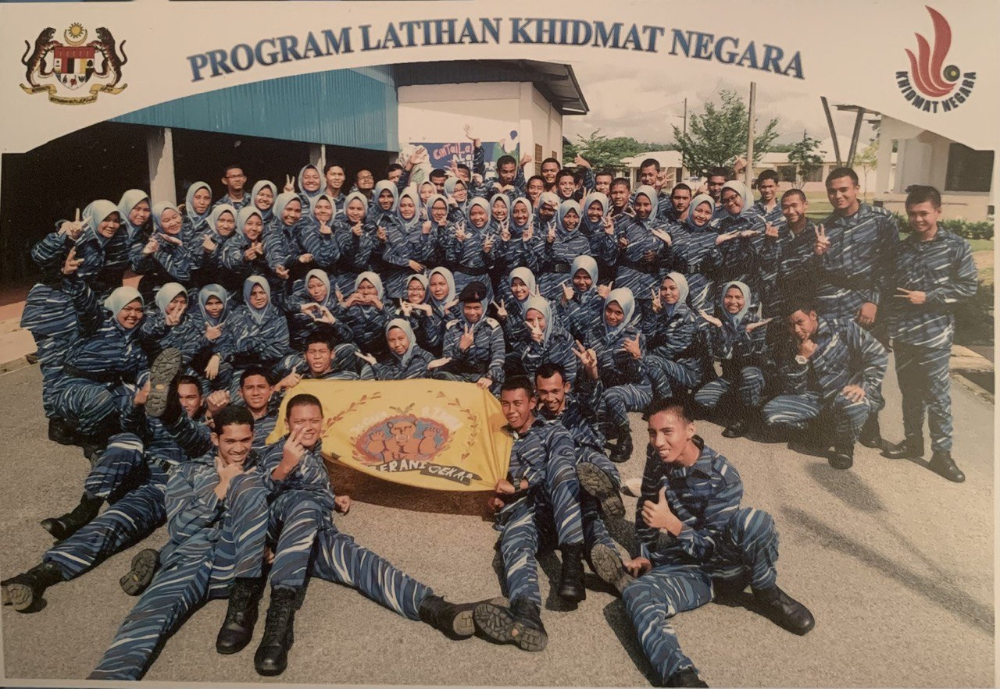
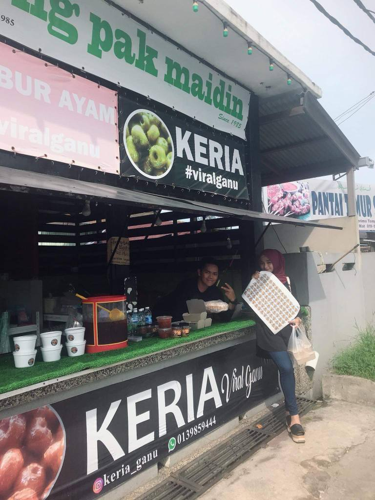
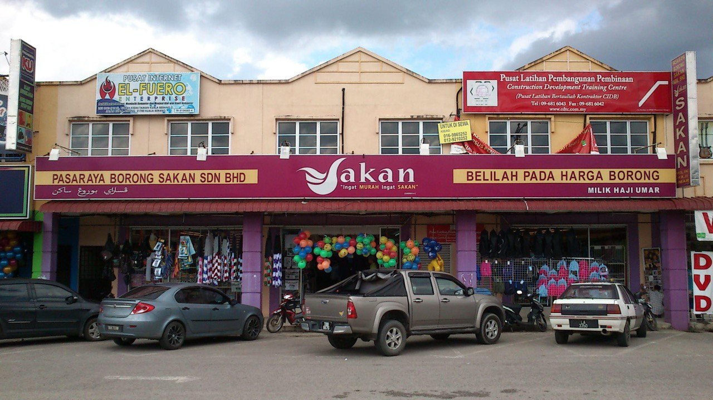

 In early 2018, I participated in the Program Latihan Khidmat Negara (PLKN) at Padang Kacong PLKN Camp, Bukit Payong, Terengganu. I have gone through various interesting and fun experiences at this camp such as entering the forest.
 Mid 2020, Covid has hit the country but I got a job at a traditional food stall which is Keria Viral Ganu for a few months after i finished my study.
 In March 2021, I quit my job at Keria Viral Ganu. After that, I underwent training as a supermarket assistant at Pasayaraya Borong Sakan Sdn. Bhd. located in Kuala Berang, Terengganu. After the training, I was hired for 1 year and my job was assistant to the supermarket manager at Pasaraya Borong Sakan Binjai Rendah.